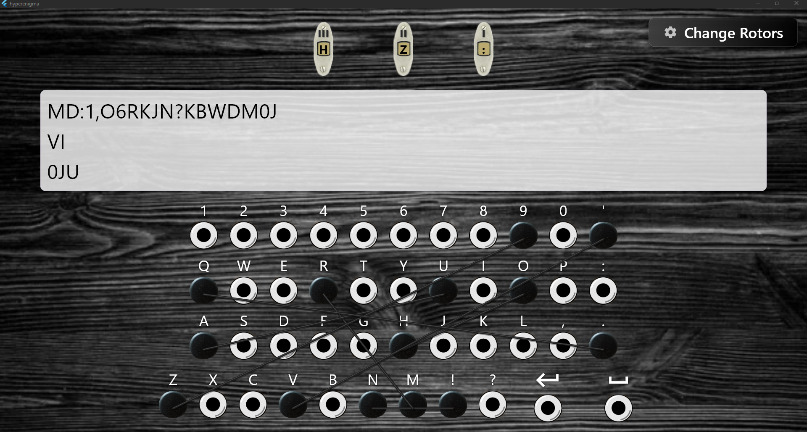
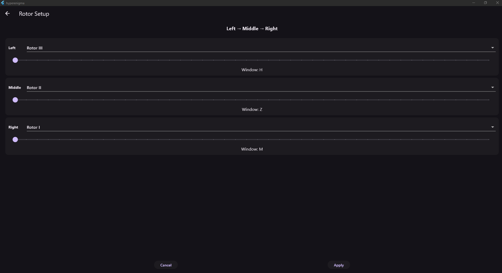

The German Enigma machine is the most studied cipher device in history, and also one of the most broken. It fell at Bletchley Park not because its mechanics were weak — the rotor stepping, the reflector, and the plugboard were all elegant — but because its 26-letter alphabet capped the rotor cycle at 26³ = 17,576 keypresses before the machine returned to its starting configuration. Modern brute force exhausts that space in seconds.
HyperEnigma asks a simple question: what would Enigma look like if it had been designed for modern text? The answer is a cross-platform Flutter application that expands the alphabet to 44 characters — every uppercase letter, every digit, space, newline, and the common punctuation marks — raising the rotor cycle to 85,184 keypresses while keeping every mechanical principle of the original intact. The result is both an educational tool for understanding rotor-based cryptography and a genuinely harder-to-break cipher than its historical predecessor.
HyperEnigma is an educational and engineering project — a faithful re-implementation of a historical cipher with an expanded character set. It is not intended as a production encryption tool, and the case study presents it as a study in mechanical cryptography and cross-platform software architecture rather than as a security product. Modern cryptographic primitives (AES, ChaCha20) remain the correct choice for any real-world data protection requirement.
Alphabet Expansion & Mechanical Fidelity
The first design decision was the alphabet itself, and it cascaded through every component of the machine. The original Enigma's 26-letter limitation wasn't a design oversight — it reflected the constraints of a keyboard that had to fit inside a portable mechanical enclosure. Modern software has no such constraint, so the alphabet was chosen to cover everything a user might actually want to type:
// The 44-character alphabet — everything the machine can encrypt
const String kAlphabet =
'ABCDEFGHIJKLMNOPQRSTUVWXYZ' // 26 uppercase letters
'0123456789' // 10 digits
" \n" // space + newline
"'!?.,:"; // 6 punctuation marks
// = 44 characters total
That single change rippled outward. Every rotor's wiring had to become a permutation
over 44 symbols instead of 26. The reflector had to pair all 44 characters. The
plugboard had to expose all 44 plug holes. And the encryption math for rotor position
— which relies on modular arithmetic — had to switch from mod 26 to
mod 44 at every step of the signal path.
The payoff is measurable. The original rotor cycle length — the number of keypresses before the machine returns to its starting configuration — was 26³ = 17,576. The expanded alphabet brings that to 44³ = 85,184 — a factor of approximately 4.85× improvement, and more importantly a cycle long enough that no two long messages are ever encrypted with the same effective rotor configuration.
Preserving the mechanical logic
The temptation when expanding a historical design is to simplify. HyperEnigma does the opposite — every core mechanism of the original machine is preserved and running in software:
- Odometer-style rotor stepping. The rightmost rotor steps on every keypress. When it completes a full 44-character turn, it nudges the middle rotor. When the middle rotor completes its turn, it nudges the leftmost. This is the same cascade that gave the original machine its characteristic stepping behaviour.
- Self-reciprocal reflector. After passing through all three rotors, the signal hits a reflector that pairs characters and sends it back through the rotors in reverse order. The consequence is that encryption and decryption are the same operation — the same machine settings that encrypt a message will also decrypt it, if you start from the same rotor positions. This property made the original machine practical to operate in the field, and HyperEnigma reproduces it exactly.
- Plugboard character swapping. Before entering the rotor stack and after exiting it, the signal passes through a plugboard that swaps specific pairs of characters. This was the original machine's most significant strengthening feature — it multiplied the effective key space by an astronomical factor — and it's preserved in full in HyperEnigma, with the additional benefit of a modern drag-and-drop interface.
The complete signal path — unchanged from the original machine — is:
Key press
→ Plugboard
→ Rotor 1 (forward)
→ Rotor 2 (forward)
→ Rotor 3 (forward)
→ Reflector
→ Rotor 3 (backward)
→ Rotor 2 (backward)
→ Rotor 1 (backward)
→ Plugboard
→ Output characterConfigurable Rotors & Interactive Plugboard
With the mechanics preserved, the next design question was configuration surface — how much of the machine's internal state can a user actually control? The original Enigma gave operators a daily key sheet listing rotor selection, rotor order, initial positions, and plugboard pairings. HyperEnigma exposes all four dimensions through an interactive UI.
Five rotors, choose three
Instead of hard-coding three rotors, HyperEnigma implements five distinct rotors (I–V), each with its own pseudo-random wiring permutation. The user chooses any three of the five, and the choice matters — the wirings are different, so swapping rotor III for rotor IV completely changes the cipher output for the same plaintext.
The three chosen rotors can also be reordered. Physical order matters cryptographically: rotors I-II-III is a different machine from rotors III-I-II, because the signal traverses them in a different sequence on the forward path and the reverse on the backward path. The UI exposes this as a reorderable list, so the user can drag rotors into any arrangement without needing to understand the underlying permutation math.
Initial positions with wiring-based labels
Each rotor can be set to any of the 44 starting positions via a slider. The detail that makes this interesting is what the slider displays. Rather than showing the alphabet position (0–43 or A–Z plus digits), the slider shows the character that rotor's own wiring produces at that position. Rotor I at position 0 might display the letter M; Rotor II at position 0 might display G. This is a small touch, but it makes the configuration screen feel authentic to the original machine — where each rotor's physical ring displayed its own wiring labels rather than a generic alphabet.
Drag-and-drop plugboard
The plugboard is the most visually distinctive feature of the app and the one that involved the most custom UI work. Traditional implementations of Enigma simulators often use text entry to configure plug pairs ("type AB, CD, EF"). HyperEnigma lets the user drag from one character's plug hole to another, with a visible connection line drawn between them the moment the drag completes.
The rendering uses a custom CustomPainter — a Flutter primitive for
drawing arbitrary graphics into a canvas — to display the connection lines dynamically
over the plugboard layout. Connections can be removed by dragging from one endpoint to
the other, and the plugboard state updates the machine's internal swap table
immediately. The signal path through the plugboard is unchanged from the original
machine; only the way it's configured is modern.
Real-Time Encryption & Modular Architecture
Two further design decisions shaped the final app — one about interaction, one about code structure. Both reflect lessons learned from the project's own history.
Encryption as you type
Rather than requiring the user to type a message and press an "Encrypt" button, the app encrypts text in real time as it is typed. Each character triggers the full signal path, produces an output character, and then advances the rotors one step — mirroring the tactile immediacy of the physical machine, where every keypress both encrypted a letter and mechanically advanced the rotor positions. The rotor position badges on screen update in the same frame, so the user can watch the rotors step as they type.
This design choice affects how the app feels, but it also surfaces a subtle
cryptographic property: because the rotor stepping is stateful, typing the same
character twice in a row produces different ciphertext each time. The first
E encrypts to one symbol and steps the rotors; the second E
encrypts from the new rotor positions and produces an entirely different output. This
is exactly the behaviour that made Enigma resistant to simple frequency analysis — and
showing it happen live is one of the most instructive aspects of the app for anyone
learning how rotor-based ciphers work.
From monolith to modules
The project began as a single 400-line file. Every feature added afterward made the file harder to read, harder to test, and harder to extend — the classic trajectory of a project that grows without structure. Halfway through, a deliberate refactor split the codebase into clean single-responsibility modules:
lib/
├── main.dart # App entry point
├── home_page.dart # Main UI + encryption pipeline
├── constants.dart # Alphabet + display helpers
├── rotor_setup_page.dart # Rotor configuration screen
├── widgets/
│ └── plugboard_painter.dart # Custom plugboard renderer
└── enigma/
├── rotor.dart # Rotor class (forward/backward/step)
├── reflector.dart # Reflector class
├── enigma_machine.dart # Ties plugboard + rotors + reflector
└── rotors.dart # Rotor wirings and reflector mapping
The split that mattered most was separating enigma/ — the pure
cryptographic logic — from home_page.dart and widgets/, the
UI layer. Once that boundary was clean, the rotor reordering feature that had seemed
difficult became almost trivial to implement: the cryptographic model didn't need to
know anything about how the UI was laid out, and the UI didn't need to know anything
about how the cipher worked. Each side communicated through a small, well-defined
interface.
Two problems that taught the most
Two specific implementation challenges are worth documenting because each one illustrates a broader principle about building cryptography in software.
The first was preserving rotor reciprocity. A rotor's wiring is a permutation — a one-to-one mapping from each character to another. The forward path uses this mapping directly; the backward path (after the reflector) requires the inverse permutation — for any output character, what input character produced it? Computing the inverse naively would mean searching the wiring array every time the signal passed backward through a rotor. The fix was to precompute the inverse once when each rotor is constructed and cache it, so every backward pass becomes a fast array lookup rather than a linear search. That single optimization turned the runtime from "acceptable" to "instant."
The second was rotor position math, which broke the cipher in ways that were initially invisible. A rotor's position has to be applied as an offset to the wiring index during encryption, then removed again from the output — otherwise the same plaintext character always maps to the same ciphertext character regardless of rotor position, which defeats the entire purpose of a rotor-based cipher. The correct formula is:
// Forward pass through a rotor at the current position
shifted = (input + position) % 44;
output = wiring[shifted];
result = (output - position) % 44;
The backward pass uses the same structure with the inverse wiring. Getting a single
sign wrong in this formula — using -position where +position
belongs, or forgetting the modulo normalization — produces a cipher that still runs,
still produces output, and still looks correct on a single test. Only when you
try to encrypt-then-decrypt the same message do you discover the cipher is broken. The
fix, once diagnosed, was to add reciprocity testing to the development workflow:
encrypt a known plaintext, reset the machine to its starting state, decrypt the
ciphertext, and verify the output matches the original. That test caught every
subsequent math error before it made it into a build.
Results & Verification
Two figures document the finished application. The first is the main screen in active use — plaintext in, ciphertext out, rotors stepped, plugboard connections drawn. The second is the configuration screen, showing the depth of the cryptographic model underneath the interface.


Quantified results
- Cross-platform deployment. A fully working Flutter application compiled for both Windows desktop and Android mobile from a single Dart codebase. The same cryptographic engine, the same UI, the same behaviour on both platforms.
- Expanded alphabet with measured impact. A 44-character alphabet yielding a rotor cycle length of 85,184 keypresses — nearly five times the original machine's 17,576-keypress cycle, with no loss of mechanical fidelity.
- Full configuration surface. Five selectable rotors, reorderable arrangement, adjustable starting positions, and a drag-and-drop plugboard — every operator-facing control that the original machine had, plus the ability to save and restore configurations.
- Reciprocity verified end-to-end. Encrypt-then-decrypt testing confirms the same machine settings that encrypt a message will also decrypt it back to the original plaintext — the property that made the original Enigma practical to operate in the field, and the property that caught every cryptographic math error during development.
-
Modular, testable codebase. A clean separation between the
cryptographic engine (
enigma/) and the UI layer (home_page.dart,widgets/) that made every subsequent feature — rotor reordering, wiring-based slider labels, the custom plugboard painter — easier to build than the features that came before them.
Mechanical fidelity preserved, alphabet expanded, cross-platform delivery confirmed. HyperEnigma demonstrates that a historical cipher can be re-implemented in software without losing the properties that made it interesting — and that expanding its alphabet produces a measurable improvement in cycle length while keeping the same three-part mechanical architecture. The app is simultaneously an educational tool for understanding rotor-based cryptography and a working, deployable demonstration of modular Flutter architecture.
What the Project Taught
Four lessons from this engagement are worth recording explicitly, because each one applies beyond this project:
- Modular architecture pays off in proportion to future work. The project began as one 400-line file. Splitting it into logical modules took a few hours but made every subsequent feature faster to add and easier to verify. The refactor wasn't a nice-to-have; it was the enabling step for everything that came after.
- Small details matter disproportionately in cryptography. A single sign error in the rotor position math silently produced a broken cipher — one that ran without errors, produced plausible-looking output, and only revealed its brokenness when tested for reciprocity. The lesson is that in cryptographic code, "it runs" is not the same as "it works."
- UI and domain logic should be decoupled early. The rotor reordering feature became straightforward the moment the cryptographic model was cleanly separated from the widgets. Keeping that boundary clean throughout the project's later development was what allowed the plugboard, the sliders, and the rotor badges to be built without touching the cipher code.
- Portfolio projects benefit from a "twist." HyperEnigma is not merely "an Enigma clone" — the expanded alphabet gives it a clear identity, a measurable improvement over the original, and a reason to exist beyond imitation. The 44-character design decision was what turned a technical exercise into a distinctive project.
Security & Data Privacy Note
HyperEnigma is an educational project that reimplements a historical cipher machine. The rotor wirings used are pseudo-random permutations chosen for the project — they do not mirror the original German military rotor wirings, which are well-documented historical records. The app is not suitable for protecting real-world data: the expanded alphabet raises the rotor cycle length meaningfully, but the underlying cryptanalysis that broke the original Enigma would adapt to the larger alphabet with modest additional effort. Any production use case should use modern cryptographic primitives — AES-GCM, ChaCha20-Poly1305, or libsodium's authenticated encryption primitives. The project's value is pedagogical and architectural, not security-functional.